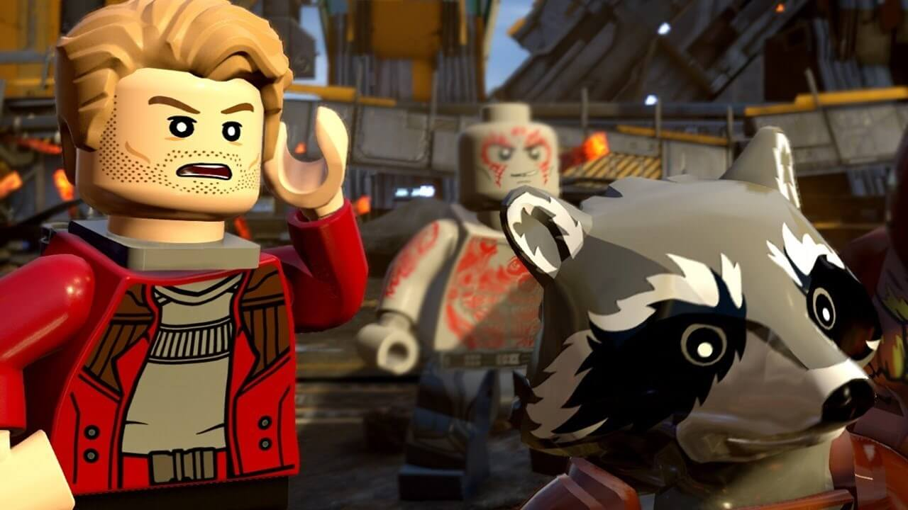
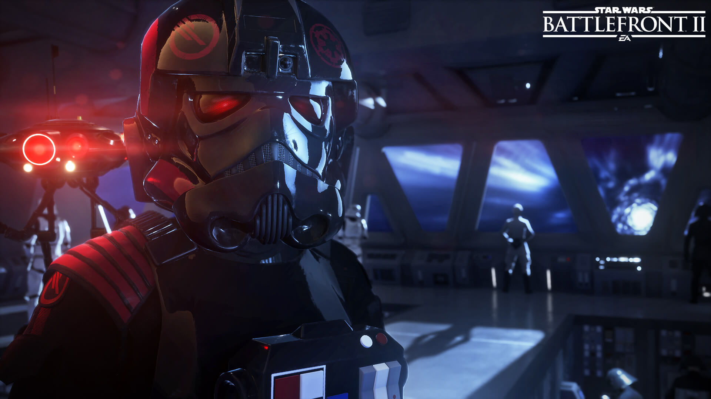

Quarto
GEEK
Início
Contato
Doações
GESHOP
Compre na nossa Loja
GEEK!!
Sobre
Saiba Mais
- Cinema -
Filmes em Gerais
Notícias e Curiosidades sobre o mundo dos filmes e cinemas
Thor Ragnarok
Trailer de Thor Ragnarok
Escrito por: C. Magno
Publicado em 21/10/2017
Confira o Trailer do tão aguardado Thor Ragnarok. O filme abordará, como já diz o título: O ragnarok, isto é, a morte de todos os deuses. E contará com o início de um novo arco do Hulk nos cinemas.
fonte:
QuartoGeek
Mulher Maravilha
Por que assistir Mulher Maravilha?
Escrito por: C. Magno
Publicado em 21/10/2017
Segundo os criadores, a sequência da franquia de jogos Destiny, game voltado para FPS e RPG terá maior foco no companherismo e cooperação.
"Queremos construir um mundo que inspire o companheirismo. Seja com um clã que está introduzindo novos jogadores nas atividades mais difíceis. Seja com um bando de gente dançando junto depois de um evento público. Existem muitas oportunidades para cooperação, interações sociais e expressões de criatividade", afirma David Dague, da Bungie.
fonte:
Fatos Desconhecidos
Top Games 2017
Top Games de 2017
Escrito por: C. Magno
Publicado em 21/10/2017
#01 - Destiny 2
#02 - Far Cry 5
#03 - Call of Duty: WWII
#04 - Wolfenstein II: The New Colossus
#05 - The Evil Within 2
#06 - Assassin's Creed: Origins
#07 - LEGO® Marvel Super Heroes 2

#08 - Fallout 4 VR
#09 - Star Wars Battlefront II

#10 - The Crew 2
fonte:
GreenManGaming